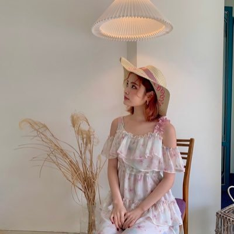
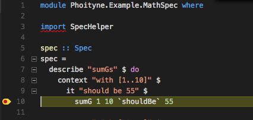

Notifications
Notifications
 Messages
Messages


 Log Out
Log Out


38m
i don’t know if ive ever mentioned this or if anyone even cares but i think out of all the weme members, sei has a the style/aesthetic closest to mine. it’s kinda like soft girl mixed with cottagecore ? idk thought it was interesting since the stuff she wears is very me :D

10d
Yet Another Guide To Build a JSON API with Phoenix 1.5 shared in
the latest Elixir Digest
https://elixirdigest.net/digests/276
@_tamas_soos #myelixirstatus #elixirlang #phoenixframework
15h
One of my favorite things about the "ergonomics" of haskell is
being able to leave underscores in code that isn't finished yet,
and the type checker still works and provides useful information
about the incomplete code. ("holes" --
https://typeclasses.com/typed-holes)

9:43 am
everything happens for a reason and if thats not true well thats embarssing but like im gonna just keep beleiving it
1:27 am
I’ve been excited to see Dune since it was first announced and I’m seeing it tonight so I’m going to dress up for the occasion by wearing my shoes that currently have the most sand in them
10:04 am
“But there's a fine line between being caring and being controlling. For instance, if they need to know where you are at all times and who you're with, that can be obsessive behavior. "It's love when they are considerate and caring about your needs," Leikam says.”

38m
Thank you